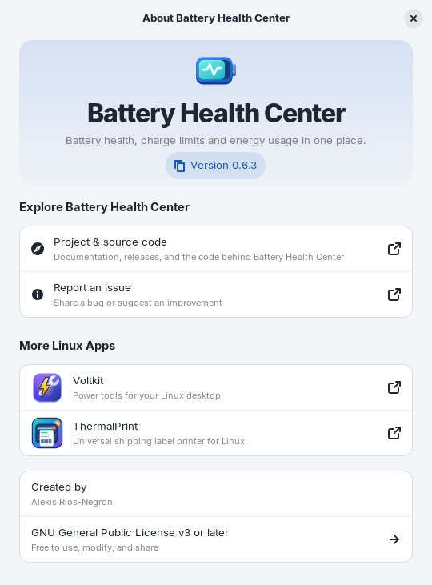

Getting started
Battery Health Center is a native GNOME app for the battery in your laptop. It shows how healthy the battery is, lets you protect it with a charge limit and a schedule, and shows which apps are draining it. This page gets you from zero to a running app.
What you need#
- A laptop with a battery that Linux can read. Battery information works with any standard Linux battery driver. Without a battery the app shows a "No Battery Found" message.
- GNOME with GTK 4.14 and libadwaita 1.5 or newer. It is developed and tested on Ubuntu 24.04, Zorin OS 18 and Linux Mint 22, and on Fedora 43 and newer. Ubuntu 22.04, Debian 12 and Mint 21 are too old.
- Charge-limit support (optional). Setting a charge limit needs firmware that the Linux kernel exposes as
charge_control_end_threshold(orcharge_stop_threshold). This is common on ThinkPads and many ASUS, Dell, Huawei, LG, Samsung and System76 laptops. When your laptop does not have it, the Charging page says "Not supported on this laptop" and everything else keeps working.
Install#
Ubuntu, Debian and derivatives (apt)#
For Ubuntu 24.04+, Debian 13+, Linux Mint 22, Zorin OS 18 and other derivatives on 64-bit Intel/AMD:
sudo install -d -m 0755 /etc/apt/keyrings
curl -fsSL https://arios4k.github.io/apt/key.asc | sudo tee /etc/apt/keyrings/battery-health-center.asc > /dev/null
echo "deb [signed-by=/etc/apt/keyrings/battery-health-center.asc] https://arios4k.github.io/apt stable main" | sudo tee /etc/apt/sources.list.d/battery-health-center.list
sudo apt update && sudo apt install battery-health-centerUpdates arrive with sudo apt upgrade. The signing key fingerprint is
F090 D01D 74F7 14C8 5A95 23CA 4773 367E BD97 6CF5.
Fedora (COPR)#
sudo dnf copr enable arios/battery-health-center
sudo dnf install battery-health-centerUpdates arrive with sudo dnf upgrade. The charge-limit and schedule services are turned on by the
installation, so nothing else needs setting up.
From source#
See Build from source in the README.
Note. If you installed an older version as a snap, remove it first with sudo snap remove battery-health-center. That deletes its history, so copy ~/snap/battery-health-center/current/.local/share/battery-health-center/*.csv to ~/.local/share/battery-health-center/ before you do.
Your first launch#
Open Battery Health Center from your applications. The first time, the app asks whether it should record history in the background.
- Choose Turn On if you want battery history, sleep drain and notifications to keep working with the window closed. The app then starts hidden when you log in.
- Choose Not Now to skip it. History is then only recorded while the window is open. You can change your mind any time with the Record History in the Background switch on the Usage page.
Some pages need time to fill with data. Nothing is wrong when a chart is empty at first:
| What | How long until it appears |
|---|---|
| Battery level and power charts | A sample is saved once a minute while the app runs. The chart starts the moment you open the app. |
| Apps using significant energy | A few seconds after you open the app. |
| Capacity trend and the date the battery reaches 80% | At least 5 daily readings spread over 14 days. The capacity is logged once a day, so open the app on different days or turn on background recording. |
| Optimized charging | At least 3 unplugs after a long charge on weekdays (and again on weekends) in the last 28 days. |
| Sleep drain | After the laptop sleeps on battery for at least 15 minutes while the app was running before and after. |
Finding your way around#

- The sidebar has the five pages: Overview, Health, Charging, Power and Usage. Hover a page to read a one-line description of it.
- The help button (a question mark, at the top of the sidebar) opens this manual in your browser, at the page that matches the page you are on: on Charging it opens the Charging page. You can also press F1 or choose User Manual from the main menu.
- The main menu (three lines) has Refresh, Export Battery Report…, Export Data as CSV…, Preferences, User Manual, About Battery Health Center and Quit.
- Adaptive layout. Overview, Health and Usage use two columns in a large window. Charging and Power use one centered column so the settings stay in reading order. Below 820 logical pixels of width the columns stack, and below 600 pixels the sidebar becomes a back-navigation list, so the app also works in a narrow window.
- Light and dark. The app follows your GNOME appearance and accent color. In high-contrast mode it keeps the system palette.
- Save problems. If a preference or the history cannot be saved (for example, the disk is full), a banner at the top says so. Choose Details to see which file and why. The app retries history writes when storage recovers.

Accessibility#
The charge ring and the charts are exposed to screen readers as images with a name and a description (the latest value and what the colors mean). Level bars announce their value, icon-only buttons have names, and decorative icons are hidden. Chart colors keep at least 3:1 contrast on light and dark cards, periods on the charger are marked by a strip along the bottom of the chart so color is never the only signal, and the dark theme's accent keeps 4.5:1 with white button text.